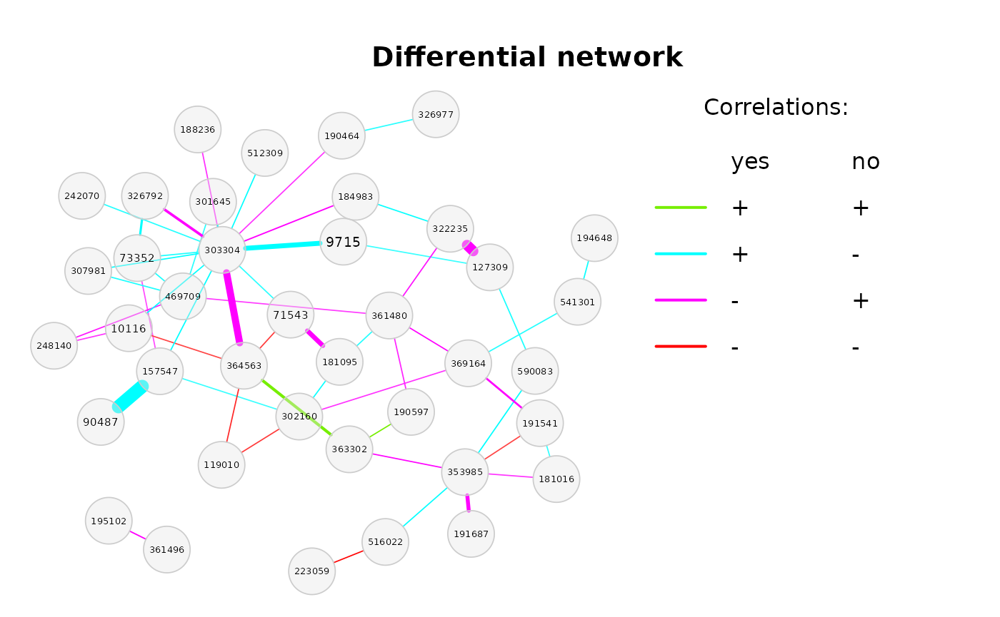

This tutorial demonstrates how to use the createAssoPerm
function for storing and reloading count tables, association matrices
and network properties of the permuted data if permutation
tests are performed with netCompare() or
diffnet().
NetCoMi (>=1.0.2) includes the function
createAssoPerm() for creating either only a matrix with
permuted group labels or storing count tables and association matrices
of the permuted data. The stored files can be passed to
netCompare() and diffnet() so that users can
repeatedly run these two functions with varying arguments, without the
need to recompute the associations each time.
createAssoPerm() additionally enables to compute the
permutation associations block-wise (for a subset of permutations) and
store them in separate files. These files can then be combined to one
large matrix (with all permutations) and passed to
netCompare() or diffnet().
The tutorial furthermore explains NetCoMi’s ability to handle matched data sets.
Network construction and analysis
We use data from the American Gut Project and conduct a network comparison between subjects with and without lactose intolerance.
To demonstrate NetCoMi’s functionality for matched
data, we build a “fake” 1:2 matched data set, where each two
samples of the LACTOSE = "no" group are assigned to one
sample of the LACTOSE = "yes" group. We use a subset of 150
samples, leading to 50 samples in group “yes” and 100 samples in group
“no”.
set.seed(123456)
# Load American Gut Data (from SpiecEasi package)
data("amgut2.filt.phy")
#table(amgut2.filt.phy@sam_data@.Data[[which(amgut2.filt.phy@sam_data@names == "LACTOSE")]])
# Divide samples into two groups: with and without lactose intolerance
lact_yes <- phyloseq::subset_samples(amgut2.filt.phy, LACTOSE == "yes")
lact_no <- phyloseq::subset_samples(amgut2.filt.phy, LACTOSE == "no")
# Extract count tables
counts_yes <- t(as(phyloseq::otu_table(lact_yes), "matrix"))
counts_no <- t(as(phyloseq::otu_table(lact_no), "matrix"))
# Build the 1:2 matched data set
counts_matched <- matrix(NA, nrow = 150, ncol = ncol(counts_yes))
colnames(counts_matched) <- colnames(counts_yes)
rownames(counts_matched) <- 1:150
ind_yes <- ind_no <- 1
for (i in 1:150) {
if ((i-1)%%3 == 0) {
counts_matched[i, ] <- counts_yes[ind_yes, ]
rownames(counts_matched)[i] <- rownames(counts_yes)[ind_yes]
ind_yes <- ind_yes + 1
} else {
counts_matched[i, ] <- counts_no[ind_no, ]
rownames(counts_matched)[i] <- rownames(counts_no)[ind_no]
ind_no <- ind_no + 1
}
}
# The corresponding group vector used for splitting the data into two subsets.
group_vec <- rep(c(1,2,2), 50)
# Note: group "1" belongs to "yes", group "2" belongs to "no"
# Network construction
net_amgut <- netConstruct(counts_matched,
group = group_vec,
matchDesign = c(1,2),
filtTax = "highestFreq",
filtTaxPar = list(highestFreq = 50),
measure = "pearson",
zeroMethod = "pseudo",
normMethod = "clr",
sparsMethod = "threshold",
thresh = 0.4,
seed = 123456)
#> Checking input arguments ... Done.
#> Data filtering ...
#> 88 taxa removed.
#> 50 taxa and 150 samples remaining.
#>
#> Zero treatment:
#> Pseudo count of 1 added.
#>
#> Normalization:
#> Execute clr(){SpiecEasi} ... Done.
#>
#> Calculate 'pearson' associations ... Done.
#>
#> Calculate associations in group 2 ... Done.
#>
#> Sparsify associations via 'threshold' ... Done.
#>
#> Sparsify associations in group 2 ... Done.
# Network analysis with default values
props_amgut <- netAnalyze(net_amgut)
#summary(props_amgut)
# Network plot
plot(props_amgut, sameLayout = TRUE, layoutGroup = "union",
nodeSize = "clr", repulsion = 0.9, cexTitle = 3.7, cexNodes = 2,
cexLabels = 2, groupNames = c("LACTOSE = yes", "LACTOSE = no"))
legend("bottom", title = "estimated correlation:", legend = c("+","-"),
col = c("#009900","red"), inset = 0.02, cex = 4, lty = 1, lwd = 4,
bty = "n", horiz = TRUE)Network comparison via the “classical way”
We conduct a network comparison with permutation tests to examine whether group differences are significant. In order to reduce the execution time, only 100 permutations are used. For real data sets, the number of permutations should be at least 1000 to get reliable results.
The matrices with estimated associations for the permuted data are
stored in an external file (in the current working directory) named
"assoPerm_comp".
# Network comparison
comp_amgut_orig <- netCompare(props_amgut, permTest = TRUE, nPerm = 100,
storeAssoPerm = TRUE,
fileStoreAssoPerm = "assoPerm_comp",
storeCountsPerm = FALSE,
seed = 123456)
#> Checking input arguments ... Done.
#> Calculate network properties ... Done.
#> Files 'assoPerm_comp.bmat and assoPerm_comp.desc.txt created.
#> Execute permutation tests ...
#> | | | 0% | |= | 1% | |= | 2% | |== | 3% | |=== | 4% | |==== | 5% | |==== | 6% | |===== | 7% | |====== | 8% | |====== | 9% | |======= | 10% | |======== | 11% | |======== | 12% | |========= | 13% | |========== | 14% | |========== | 15% | |=========== | 16% | |============ | 17% | |============= | 18% | |============= | 19% | |============== | 20% | |=============== | 21% | |=============== | 22% | |================ | 23% | |================= | 24% | |================== | 25% | |================== | 26% | |=================== | 27% | |==================== | 28% | |==================== | 29% | |===================== | 30% | |====================== | 31% | |====================== | 32% | |======================= | 33% | |======================== | 34% | |======================== | 35% | |========================= | 36% | |========================== | 37% | |=========================== | 38% | |=========================== | 39% | |============================ | 40% | |============================= | 41% | |============================= | 42% | |============================== | 43% | |=============================== | 44% | |================================ | 45% | |================================ | 46% | |================================= | 47% | |================================== | 48% | |================================== | 49% | |=================================== | 50% | |==================================== | 51% | |==================================== | 52% | |===================================== | 53% | |====================================== | 54% | |====================================== | 55% | |======================================= | 56% | |======================================== | 57% | |========================================= | 58% | |========================================= | 59% | |========================================== | 60% | |=========================================== | 61% | |=========================================== | 62% | |============================================ | 63% | |============================================= | 64% | |============================================== | 65% | |============================================== | 66% | |=============================================== | 67% | |================================================ | 68% | |================================================ | 69% | |================================================= | 70% | |================================================== | 71% | |================================================== | 72% | |=================================================== | 73% | |==================================================== | 74% | |==================================================== | 75% | |===================================================== | 76% | |====================================================== | 77% | |======================================================= | 78% | |======================================================= | 79% | |======================================================== | 80% | |========================================================= | 81% | |========================================================= | 82% | |========================================================== | 83% | |=========================================================== | 84% | |============================================================ | 85% | |============================================================ | 86% | |============================================================= | 87% | |============================================================== | 88% | |============================================================== | 89% | |=============================================================== | 90% | |================================================================ | 91% | |================================================================ | 92% | |================================================================= | 93% | |================================================================== | 94% | |================================================================== | 95% | |=================================================================== | 96% | |==================================================================== | 97% | |===================================================================== | 98% | |===================================================================== | 99% | |======================================================================| 100%
#> Done.
#> Calculating p-values ... Done.
#> Adjust for multiple testing using 'adaptBH' ... Done.
summary(comp_amgut_orig)#>
#> Comparison of Network Properties
#> ----------------------------------
#> CALL:
#> netCompare(x = props_amgut, permTest = TRUE, nPerm = 100, seed = 123456,
#> storeAssoPerm = TRUE, fileStoreAssoPerm = "assoPerm_comp",
#> storeCountsPerm = FALSE)
#>
#> ______________________________
#> Global network properties
#> `````````````````````````
#> Largest connected component (LCC):
#> group '1' group '2' abs.diff. p-value
#> Relative LCC size 0.480 0.400 0.080 0.950495
#> Clustering coefficient 0.510 0.635 0.125 0.584158
#> Modularity 0.261 0.175 0.085 0.524752
#> Positive edge percentage 57.627 62.500 4.873 0.554455
#> Edge density 0.214 0.295 0.081 0.693069
#> Natural connectivity 0.080 0.109 0.029 0.742574
#> Vertex connectivity 1.000 1.000 0.000 1.000000
#> Edge connectivity 1.000 1.000 0.000 1.000000
#> Average dissimilarity* 0.921 0.887 0.033 0.693069
#> Average path length** 1.786 1.459 0.327 0.643564
#>
#> Whole network:
#> group '1' group '2' abs.diff. p-value
#> Number of components 21.000 27.000 6.000 0.861386
#> Clustering coefficient 0.463 0.635 0.172 0.247525
#> Modularity 0.332 0.252 0.080 0.504950
#> Positive edge percentage 58.462 63.333 4.872 0.564356
#> Edge density 0.053 0.049 0.004 0.871287
#> Natural connectivity 0.030 0.031 0.001 0.772277
#> -----
#> p-values: one-tailed test with null hypothesis diff=0
#> *: Dissimilarity = 1 - edge weight
#> **: Path length = Units with average dissimilarity
#>
#> ______________________________
#> Jaccard index (similarity betw. sets of most central nodes)
#> ```````````````````````````````````````````````````````````
#> Jacc P(<=Jacc) P(>=Jacc)
#> degree 0.615 0.991177 0.034655 *
#> betweenness centr. 0.312 0.546936 0.660877
#> closeness centr. 0.529 0.972716 0.075475 .
#> eigenvec. centr. 0.625 0.995960 0.015945 *
#> hub taxa 0.500 0.888889 0.407407
#> -----
#> Jaccard index in [0,1] (1 indicates perfect agreement)
#>
#> ______________________________
#> Adjusted Rand index (similarity betw. clusterings)
#> ``````````````````````````````````````````````````
#> wholeNet LCC
#> ARI 0.383 0.281
#> p-value 0.000 0.000
#> -----
#> ARI in [-1,1] with ARI=1: perfect agreement betw. clusterings
#> ARI=0: expected for two random clusterings
#> p-value: permutation test (n=1000) with null hypothesis ARI=0
#>
#> ______________________________
#> Graphlet Correlation Distance
#> `````````````````````````````
#> wholeNet LCC
#> GCD 0.914000 2.241000
#> p-value 0.633663 0.574257
#> -----
#> GCD >= 0 (GCD=0 indicates perfect agreement between GCMs)
#> p-value: permutation test with null hypothesis GCD=0
#>
#> ______________________________
#> Centrality measures
#> - In decreasing order
#> - Centrality of disconnected components is zero
#> ````````````````````````````````````````````````
#> Degree (normalized):
#> group '1' group '2' abs.diff. adj.p-value
#> 364563 0.061 0.245 0.184 1
#> 190597 0.102 0.000 0.102 1
#> 369164 0.102 0.000 0.102 1
#> 184983 0.184 0.102 0.082 1
#> 194648 0.000 0.082 0.082 1
#> 353985 0.082 0.000 0.082 1
#> 242070 0.082 0.000 0.082 1
#> 307981 0.122 0.184 0.061 1
#> 188236 0.122 0.184 0.061 1
#> 363302 0.102 0.041 0.061 1
#>
#> Betweenness centrality (normalized):
#> group '1' group '2' abs.diff. adj.p-value
#> 353985 0.320 0.000 0.320 0.494890
#> 364563 0.040 0.216 0.177 0.999678
#> 188236 0.024 0.187 0.163 0.999678
#> 307981 0.020 0.158 0.138 0.999678
#> 157547 0.103 0.000 0.103 0.999678
#> 71543 0.091 0.000 0.091 0.999678
#> 590083 0.087 0.000 0.087 0.742335
#> 190597 0.079 0.000 0.079 0.999678
#> 194648 0.000 0.070 0.070 0.999678
#> 288134 0.063 0.129 0.065 0.999678
#>
#> Closeness centrality (normalized):
#> group '1' group '2' abs.diff. adj.p-value
#> 190597 0.871 0.000 0.871 0.489307
#> 194648 0.000 0.868 0.868 0.768911
#> 242070 0.809 0.000 0.809 0.733961
#> 369164 0.788 0.000 0.788 0.733961
#> 302160 0.000 0.677 0.677 0.988400
#> 353985 0.639 0.000 0.639 0.733961
#> 516022 0.000 0.561 0.561 0.988400
#> 181095 0.515 0.000 0.515 0.733961
#> 590083 0.507 0.000 0.507 0.489307
#> 470239 0.349 0.000 0.349 0.988400
#>
#> Eigenvector centrality (normalized):
#> group '1' group '2' abs.diff. adj.p-value
#> 242070 0.469 0.000 0.469 0.9998
#> 307981 0.334 0.672 0.339 0.9998
#> 301645 0.332 0.661 0.329 0.9998
#> 364563 0.079 0.339 0.260 0.9998
#> 369164 0.201 0.000 0.201 0.9998
#> 326792 0.130 0.300 0.170 0.9998
#> 157547 0.632 0.801 0.169 0.9998
#> 190597 0.146 0.000 0.146 0.9998
#> 363302 0.153 0.012 0.141 0.9998
#> 71543 0.910 0.777 0.133 0.9998
#>
#> _________________________________________________________
#> Significance codes: ***: 0.001, **: 0.01, *: 0.05, .: 0.1The network comparison is repeated, but this time, the stored
permutation associations are loaded by netCompare(). This
option might be useful to rerun the function with alternative multiple
testing adjustment, without the need of re-estimating all
associations.
# Network comparison
comp_amgut1 <- netCompare(props_amgut, permTest = TRUE, nPerm = 100,
fileLoadAssoPerm = "assoPerm_comp",
storeCountsPerm = FALSE,
seed = 123456)
#> Checking input arguments ... Done.
#> Calculate network properties ... Done.
#> Execute permutation tests ...
#> | | | 0% | |= | 1% | |= | 2% | |== | 3% | |=== | 4% | |==== | 5% | |==== | 6% | |===== | 7% | |====== | 8% | |====== | 9% | |======= | 10% | |======== | 11% | |======== | 12% | |========= | 13% | |========== | 14% | |========== | 15% | |=========== | 16% | |============ | 17% | |============= | 18% | |============= | 19% | |============== | 20% | |=============== | 21% | |=============== | 22% | |================ | 23% | |================= | 24% | |================== | 25% | |================== | 26% | |=================== | 27% | |==================== | 28% | |==================== | 29% | |===================== | 30% | |====================== | 31% | |====================== | 32% | |======================= | 33% | |======================== | 34% | |======================== | 35% | |========================= | 36% | |========================== | 37% | |=========================== | 38% | |=========================== | 39% | |============================ | 40% | |============================= | 41% | |============================= | 42% | |============================== | 43% | |=============================== | 44% | |================================ | 45% | |================================ | 46% | |================================= | 47% | |================================== | 48% | |================================== | 49% | |=================================== | 50% | |==================================== | 51% | |==================================== | 52% | |===================================== | 53% | |====================================== | 54% | |====================================== | 55% | |======================================= | 56% | |======================================== | 57% | |========================================= | 58% | |========================================= | 59% | |========================================== | 60% | |=========================================== | 61% | |=========================================== | 62% | |============================================ | 63% | |============================================= | 64% | |============================================== | 65% | |============================================== | 66% | |=============================================== | 67% | |================================================ | 68% | |================================================ | 69% | |================================================= | 70% | |================================================== | 71% | |================================================== | 72% | |=================================================== | 73% | |==================================================== | 74% | |==================================================== | 75% | |===================================================== | 76% | |====================================================== | 77% | |======================================================= | 78% | |======================================================= | 79% | |======================================================== | 80% | |========================================================= | 81% | |========================================================= | 82% | |========================================================== | 83% | |=========================================================== | 84% | |============================================================ | 85% | |============================================================ | 86% | |============================================================= | 87% | |============================================================== | 88% | |============================================================== | 89% | |=============================================================== | 90% | |================================================================ | 91% | |================================================================ | 92% | |================================================================= | 93% | |================================================================== | 94% | |================================================================== | 95% | |=================================================================== | 96% | |==================================================================== | 97% | |===================================================================== | 98% | |===================================================================== | 99% | |======================================================================| 100%
#> Done.
#> Calculating p-values ... Done.
#> Adjust for multiple testing using 'adaptBH' ... Done.
# Check whether the second comparison leads to equal results
all.equal(comp_amgut_orig$properties, comp_amgut1$properties)
#> [1] TRUEThe stored permutation associations can also be passed to
diffnet() to construct a differential network.
# Construct differential network
diffnet_amgut <- diffnet(net_amgut, diffMethod = "permute", nPerm = 100,
fileLoadAssoPerm = "assoPerm_comp",
storeCountsPerm = FALSE)
#> Checking input arguments ...
#> Done.
#> Execute permutation tests ...
#> | | | 0% | |= | 1% | |= | 2% | |== | 3% | |=== | 4% | |==== | 5% | |==== | 6% | |===== | 7% | |====== | 8% | |====== | 9% | |======= | 10% | |======== | 11% | |======== | 12% | |========= | 13% | |========== | 14% | |========== | 15% | |=========== | 16% | |============ | 17% | |============= | 18% | |============= | 19% | |============== | 20% | |=============== | 21% | |=============== | 22% | |================ | 23% | |================= | 24% | |================== | 25% | |================== | 26% | |=================== | 27% | |==================== | 28% | |==================== | 29% | |===================== | 30% | |====================== | 31% | |====================== | 32% | |======================= | 33% | |======================== | 34% | |======================== | 35% | |========================= | 36% | |========================== | 37% | |=========================== | 38% | |=========================== | 39% | |============================ | 40% | |============================= | 41% | |============================= | 42% | |============================== | 43% | |=============================== | 44% | |================================ | 45% | |================================ | 46% | |================================= | 47% | |================================== | 48% | |================================== | 49% | |=================================== | 50% | |==================================== | 51% | |==================================== | 52% | |===================================== | 53% | |====================================== | 54% | |====================================== | 55% | |======================================= | 56% | |======================================== | 57% | |========================================= | 58% | |========================================= | 59% | |========================================== | 60% | |=========================================== | 61% | |=========================================== | 62% | |============================================ | 63% | |============================================= | 64% | |============================================== | 65% | |============================================== | 66% | |=============================================== | 67% | |================================================ | 68% | |================================================ | 69% | |================================================= | 70% | |================================================== | 71% | |================================================== | 72% | |=================================================== | 73% | |==================================================== | 74% | |==================================================== | 75% | |===================================================== | 76% | |====================================================== | 77% | |======================================================= | 78% | |======================================================= | 79% | |======================================================== | 80% | |========================================================= | 81% | |========================================================= | 82% | |========================================================== | 83% | |=========================================================== | 84% | |============================================================ | 85% | |============================================================ | 86% | |============================================================= | 87% | |============================================================== | 88% | |============================================================== | 89% | |=============================================================== | 90% | |================================================================ | 91% | |================================================================ | 92% | |================================================================= | 93% | |================================================================== | 94% | |================================================================== | 95% | |=================================================================== | 96% | |==================================================================== | 97% | |===================================================================== | 98% | |===================================================================== | 99% | |======================================================================| 100%
#> Adjust for multiple testing using 'lfdr' ...
#>
#> Execute fdrtool() ...
#> Step 1... determine cutoff point
#> Step 2... estimate parameters of null distribution and eta0
#> Step 3... compute p-values and estimate empirical PDF/CDF
#> Step 4... compute q-values and local fdr
#> Done.
#> No significant differential associations detected after multiple testing adjustment.
plot(diffnet_amgut)
#> Error in plot.diffnet(diffnet_amgut): There are no differential correlations to plot (after multiple testing adjustment).As expected for a number of permutations of only 100, there are no differential associations after multiple testing adjustment.
Just to take a look how the differential network could look like, we plot the differential network based on non-adjusted p-values. Note that this approach is statistically not correct!
plot(diffnet_amgut, adjusted = FALSE,
mar = c(2, 2, 5, 15), legendPos = c(1.2,1.2),
legendArgs = list(bty = "n"),
legendGroupnames = c("yes", "no"),
legendTitle = "Correlations:")
Network comparison using createAssoPerm()
This time, the permutation association matrices are generated using
createAssoPerm() and then passed to
netCompare().
The output should be written to a variable because
createAssoPerm() generally returns the matrix with permuted
group labels.
permGroupMat <- createAssoPerm(props_amgut, nPerm = 100,
computeAsso = TRUE,
fileStoreAssoPerm = "assoPerm",
storeCountsPerm = TRUE,
append = FALSE, seed = 123456)Let’s take a look at the permuted group labels. To interpret the
group labels correctly, it is important to know, that within
netConstruct(), the data set is divided into two matrices
belonging to the two groups. For the permutation tests, the two matrices
are combined by rows and for each permutation, the samples are
reassigned to one of the two groups while keeping the matching design
for matched data.
In our case, the permGroupMat matrix consists of 100
rows (nPerm = 100) and 150 columns (our sample size). The
first 50 columns belong to the first group (group “yes” in our case) and
columns 51 to 150 belong to the second group.
Since each two samples of group 2 are matched to one sample of group
1, we number the group label matrix accordingly. Now, we can see that
the matching design is kept: Since sample 3 is assigned to group 1,
samples 1 and 2 have to be assigned to group 2 and so on (entries [1,1]
and [1,51:52] of permGroupMat).
seq1 <- seq(1,150, by = 3)
seq2 <- seq(1:150)[!seq(1:150)%in%seq1]
colnames(permGroupMat) <- c(seq1, seq2)
permGroupMat[1:5, 1:10]
#> 1 4 7 10 13 16 19 22 25 28
#> [1,] 2 2 2 2 1 2 2 1 2 2
#> [2,] 2 2 2 1 1 2 2 2 2 2
#> [3,] 2 2 1 1 2 2 2 1 2 2
#> [4,] 2 2 1 2 1 2 2 2 1 1
#> [5,] 2 2 2 2 2 1 2 2 2 2
permGroupMat[1:5, 51:71]
#> 2 3 5 6 8 9 11 12 14 15 17 18 20 21 23 24 26 27 29 30 32
#> [1,] 2 1 1 2 2 1 1 2 2 2 1 2 2 1 2 2 2 1 1 2 1
#> [2,] 2 1 2 1 2 1 2 2 2 2 1 2 1 2 2 1 2 1 2 1 2
#> [3,] 2 1 1 2 2 2 2 2 1 2 1 2 2 1 2 2 1 2 2 1 2
#> [4,] 1 2 1 2 2 2 1 2 2 2 1 2 2 1 1 2 2 2 2 2 1
#> [5,] 2 1 2 1 1 2 2 1 1 2 2 2 2 1 1 2 1 2 1 2 2As before, the stored permutation association matrices are passed to
netCompare().
comp_amgut2 <- netCompare(props_amgut, permTest = TRUE, nPerm = 100,
fileLoadAssoPerm = "assoPerm",
seed = 123456)
#> Checking input arguments ... Done.
#> Calculate network properties ... Done.
#> Execute permutation tests ...
#> | | | 0% | |= | 1% | |= | 2% | |== | 3% | |=== | 4% | |==== | 5% | |==== | 6% | |===== | 7% | |====== | 8% | |====== | 9% | |======= | 10% | |======== | 11% | |======== | 12% | |========= | 13% | |========== | 14% | |========== | 15% | |=========== | 16% | |============ | 17% | |============= | 18% | |============= | 19% | |============== | 20% | |=============== | 21% | |=============== | 22% | |================ | 23% | |================= | 24% | |================== | 25% | |================== | 26% | |=================== | 27% | |==================== | 28% | |==================== | 29% | |===================== | 30% | |====================== | 31% | |====================== | 32% | |======================= | 33% | |======================== | 34% | |======================== | 35% | |========================= | 36% | |========================== | 37% | |=========================== | 38% | |=========================== | 39% | |============================ | 40% | |============================= | 41% | |============================= | 42% | |============================== | 43% | |=============================== | 44% | |================================ | 45% | |================================ | 46% | |================================= | 47% | |================================== | 48% | |================================== | 49% | |=================================== | 50% | |==================================== | 51% | |==================================== | 52% | |===================================== | 53% | |====================================== | 54% | |====================================== | 55% | |======================================= | 56% | |======================================== | 57% | |========================================= | 58% | |========================================= | 59% | |========================================== | 60% | |=========================================== | 61% | |=========================================== | 62% | |============================================ | 63% | |============================================= | 64% | |============================================== | 65% | |============================================== | 66% | |=============================================== | 67% | |================================================ | 68% | |================================================ | 69% | |================================================= | 70% | |================================================== | 71% | |================================================== | 72% | |=================================================== | 73% | |==================================================== | 74% | |==================================================== | 75% | |===================================================== | 76% | |====================================================== | 77% | |======================================================= | 78% | |======================================================= | 79% | |======================================================== | 80% | |========================================================= | 81% | |========================================================= | 82% | |========================================================== | 83% | |=========================================================== | 84% | |============================================================ | 85% | |============================================================ | 86% | |============================================================= | 87% | |============================================================== | 88% | |============================================================== | 89% | |=============================================================== | 90% | |================================================================ | 91% | |================================================================ | 92% | |================================================================= | 93% | |================================================================== | 94% | |================================================================== | 95% | |=================================================================== | 96% | |==================================================================== | 97% | |===================================================================== | 98% | |===================================================================== | 99% | |======================================================================| 100%
#> Done.
#> Calculating p-values ... Done.
#> Adjust for multiple testing using 'adaptBH' ... Done.
# Are the network properties equal?
all.equal(comp_amgut_orig$properties, comp_amgut2$properties)
#> [1] TRUEUsing the fm.open function, we take a look at the stored
matrices themselves.
# Open stored files and check whether they are equal
assoPerm1 <- filematrix::fm.open(filenamebase = "assoPerm_comp" , readonly = TRUE)
assoPerm2 <- filematrix::fm.open(filenamebase = "assoPerm" , readonly = TRUE)
identical(as.matrix(assoPerm1), as.matrix(assoPerm2))
#> [1] TRUE
dim(as.matrix(assoPerm1))
#> [1] 5000 100
dim(as.matrix(assoPerm2))
#> [1] 5000 100
# Close files
filematrix::close(assoPerm1)
filematrix::close(assoPerm2)Block-wise execution
Due to limited resources, it might be meaningful to estimate the associations in blocks, that is, for a subset of permutations instead of all permutations at once. We’ll now see how to perform such a block-wise network comparison using NetCoMi’s functions. Note that in this approach, the external file is extended in each iteration, which is why it is not parallelizable.
In the first step, createAssoPerm is used to generate
the matrix with permuted group labels (for all permutations!). Hence, we
set the computeAsso parameter to FALSE.
permGroupMat <- createAssoPerm(props_amgut, nPerm = 100,
computeAsso = FALSE, seed = 123456)
#> Create matrix with permuted group labels ... Done.We now compute the association matrices in blocks of 20 permutations in each loop (leading to 5 iterations).
Note: The nPerm argument must be set to the block
size.
The external file (containing the association matrices) must be
extended in each loop, except for the first iteration, where the file is
created. Thus, append is set to TRUE for
i >=2.
nPerm_all <- 100
blocksize <- 20
repetitions <- nPerm_all / blocksize
for (i in 1:repetitions) {
print(i)
if (i == 1) {
# Create a new file in the first run
tmp <- createAssoPerm(props_amgut, nPerm = blocksize,
permGroupMat = permGroupMat[(i-1) * blocksize + 1:blocksize, ],
computeAsso = TRUE,
fileStoreAssoPerm = "assoPerm",
storeCountsPerm = FALSE, append = FALSE)
} else {
tmp <- createAssoPerm(props_amgut, nPerm = blocksize,
permGroupMat = permGroupMat[(i-1) * blocksize + 1:blocksize, ],
computeAsso = TRUE,
fileStoreAssoPerm = "assoPerm",
storeCountsPerm = FALSE, append = TRUE)
}
}
#> [1] 1
#> Files 'assoPerm.bmat and assoPerm.desc.txt created.
#> Compute permutation associations ...
#> | | | 0% | |==== | 5% | |======= | 10% | |========== | 15% | |============== | 20% | |================== | 25% | |===================== | 30% | |======================== | 35% | |============================ | 40% | |================================ | 45% | |=================================== | 50% | |====================================== | 55% | |========================================== | 60% | |============================================== | 65% | |================================================= | 70% | |==================================================== | 75% | |======================================================== | 80% | |============================================================ | 85% | |=============================================================== | 90% | |================================================================== | 95% | |======================================================================| 100%
#> Done.
#> [1] 2
#> Compute permutation associations ...
#> | | | 0% | |==== | 5% | |======= | 10% | |========== | 15% | |============== | 20% | |================== | 25% | |===================== | 30% | |======================== | 35% | |============================ | 40% | |================================ | 45% | |=================================== | 50% | |====================================== | 55% | |========================================== | 60% | |============================================== | 65% | |================================================= | 70% | |==================================================== | 75% | |======================================================== | 80% | |============================================================ | 85% | |=============================================================== | 90% | |================================================================== | 95% | |======================================================================| 100%
#> Done.
#> [1] 3
#> Compute permutation associations ...
#> | | | 0% | |==== | 5% | |======= | 10% | |========== | 15% | |============== | 20% | |================== | 25% | |===================== | 30% | |======================== | 35% | |============================ | 40% | |================================ | 45% | |=================================== | 50% | |====================================== | 55% | |========================================== | 60% | |============================================== | 65% | |================================================= | 70% | |==================================================== | 75% | |======================================================== | 80% | |============================================================ | 85% | |=============================================================== | 90% | |================================================================== | 95% | |======================================================================| 100%
#> Done.
#> [1] 4
#> Compute permutation associations ...
#> | | | 0% | |==== | 5% | |======= | 10% | |========== | 15% | |============== | 20% | |================== | 25% | |===================== | 30% | |======================== | 35% | |============================ | 40% | |================================ | 45% | |=================================== | 50% | |====================================== | 55% | |========================================== | 60% | |============================================== | 65% | |================================================= | 70% | |==================================================== | 75% | |======================================================== | 80% | |============================================================ | 85% | |=============================================================== | 90% | |================================================================== | 95% | |======================================================================| 100%
#> Done.
#> [1] 5
#> Compute permutation associations ...
#> | | | 0% | |==== | 5% | |======= | 10% | |========== | 15% | |============== | 20% | |================== | 25% | |===================== | 30% | |======================== | 35% | |============================ | 40% | |================================ | 45% | |=================================== | 50% | |====================================== | 55% | |========================================== | 60% | |============================================== | 65% | |================================================= | 70% | |==================================================== | 75% | |======================================================== | 80% | |============================================================ | 85% | |=============================================================== | 90% | |================================================================== | 95% | |======================================================================| 100%
#> Done.The stored file, which now contains the associations of all 100
permutations, can be passed to netCompare() as before.
comp_amgut3 <- netCompare(props_amgut, permTest = TRUE, nPerm = 100,
storeAssoPerm = TRUE,
fileLoadAssoPerm = "assoPerm",
storeCountsPerm = FALSE, seed = 123456)
#> Checking input arguments ... Done.
#> Calculate network properties ... Done.
#> Execute permutation tests ...
#> | | | 0% | |= | 1% | |= | 2% | |== | 3% | |=== | 4% | |==== | 5% | |==== | 6% | |===== | 7% | |====== | 8% | |====== | 9% | |======= | 10% | |======== | 11% | |======== | 12% | |========= | 13% | |========== | 14% | |========== | 15% | |=========== | 16% | |============ | 17% | |============= | 18% | |============= | 19% | |============== | 20% | |=============== | 21% | |=============== | 22% | |================ | 23% | |================= | 24% | |================== | 25% | |================== | 26% | |=================== | 27% | |==================== | 28% | |==================== | 29% | |===================== | 30% | |====================== | 31% | |====================== | 32% | |======================= | 33% | |======================== | 34% | |======================== | 35% | |========================= | 36% | |========================== | 37% | |=========================== | 38% | |=========================== | 39% | |============================ | 40% | |============================= | 41% | |============================= | 42% | |============================== | 43% | |=============================== | 44% | |================================ | 45% | |================================ | 46% | |================================= | 47% | |================================== | 48% | |================================== | 49% | |=================================== | 50% | |==================================== | 51% | |==================================== | 52% | |===================================== | 53% | |====================================== | 54% | |====================================== | 55% | |======================================= | 56% | |======================================== | 57% | |========================================= | 58% | |========================================= | 59% | |========================================== | 60% | |=========================================== | 61% | |=========================================== | 62% | |============================================ | 63% | |============================================= | 64% | |============================================== | 65% | |============================================== | 66% | |=============================================== | 67% | |================================================ | 68% | |================================================ | 69% | |================================================= | 70% | |================================================== | 71% | |================================================== | 72% | |=================================================== | 73% | |==================================================== | 74% | |==================================================== | 75% | |===================================================== | 76% | |====================================================== | 77% | |======================================================= | 78% | |======================================================= | 79% | |======================================================== | 80% | |========================================================= | 81% | |========================================================= | 82% | |========================================================== | 83% | |=========================================================== | 84% | |============================================================ | 85% | |============================================================ | 86% | |============================================================= | 87% | |============================================================== | 88% | |============================================================== | 89% | |=============================================================== | 90% | |================================================================ | 91% | |================================================================ | 92% | |================================================================= | 93% | |================================================================== | 94% | |================================================================== | 95% | |=================================================================== | 96% | |==================================================================== | 97% | |===================================================================== | 98% | |===================================================================== | 99% | |======================================================================| 100%
#> Done.
#> Calculating p-values ... Done.
#> Adjust for multiple testing using 'adaptBH' ... Done.
# Are the network properties equal to the first comparison?
all.equal(comp_amgut_orig$properties, comp_amgut3$properties)
#> [1] TRUE
# Open stored files and check whether they are equal
assoPerm1 <- fm.open(filenamebase = "assoPerm_comp" , readonly = TRUE)
assoPerm3 <- fm.open(filenamebase = "assoPerm" , readonly = TRUE)
all.equal(as.matrix(assoPerm1), as.matrix(assoPerm3))
#> [1] TRUE
dim(as.matrix(assoPerm1))
#> [1] 5000 100
dim(as.matrix(assoPerm3))
#> [1] 5000 100
# Close files
close(assoPerm1)
close(assoPerm3)Block-wise execution (executable in parallel)
If the blocks should be computed in parallel, extending the
"assoPerm" file in each iteration would not work. To be
able to run the blocks in parallel, we have to create a separate file in
each iteration and combine them at the end.
# Create the matrix with permuted group labels (as before)
permGroupMat <- createAssoPerm(props_amgut, nPerm = 100, computeAsso = FALSE,
seed = 123456)
#> Create matrix with permuted group labels ... Done.
nPerm_all <- 100
blocksize <- 20
repetitions <- nPerm_all / blocksize # 5 repetitions
# Execute as standard for-loop:
for (i in 1:repetitions) {
tmp <- createAssoPerm(props_amgut, nPerm = blocksize,
permGroupMat = permGroupMat[(i-1) * blocksize + 1:blocksize, ],
computeAsso = TRUE,
fileStoreAssoPerm = paste0("assoPerm", i),
storeCountsPerm = FALSE, append = FALSE)
}
#> Files 'assoPerm1.bmat and assoPerm1.desc.txt created.
#> Compute permutation associations ...
#> | | | 0% | |==== | 5% | |======= | 10% | |========== | 15% | |============== | 20% | |================== | 25% | |===================== | 30% | |======================== | 35% | |============================ | 40% | |================================ | 45% | |=================================== | 50% | |====================================== | 55% | |========================================== | 60% | |============================================== | 65% | |================================================= | 70% | |==================================================== | 75% | |======================================================== | 80% | |============================================================ | 85% | |=============================================================== | 90% | |================================================================== | 95% | |======================================================================| 100%
#> Done.
#> Files 'assoPerm2.bmat and assoPerm2.desc.txt created.
#> Compute permutation associations ...
#> | | | 0% | |==== | 5% | |======= | 10% | |========== | 15% | |============== | 20% | |================== | 25% | |===================== | 30% | |======================== | 35% | |============================ | 40% | |================================ | 45% | |=================================== | 50% | |====================================== | 55% | |========================================== | 60% | |============================================== | 65% | |================================================= | 70% | |==================================================== | 75% | |======================================================== | 80% | |============================================================ | 85% | |=============================================================== | 90% | |================================================================== | 95% | |======================================================================| 100%
#> Done.
#> Files 'assoPerm3.bmat and assoPerm3.desc.txt created.
#> Compute permutation associations ...
#> | | | 0% | |==== | 5% | |======= | 10% | |========== | 15% | |============== | 20% | |================== | 25% | |===================== | 30% | |======================== | 35% | |============================ | 40% | |================================ | 45% | |=================================== | 50% | |====================================== | 55% | |========================================== | 60% | |============================================== | 65% | |================================================= | 70% | |==================================================== | 75% | |======================================================== | 80% | |============================================================ | 85% | |=============================================================== | 90% | |================================================================== | 95% | |======================================================================| 100%
#> Done.
#> Files 'assoPerm4.bmat and assoPerm4.desc.txt created.
#> Compute permutation associations ...
#> | | | 0% | |==== | 5% | |======= | 10% | |========== | 15% | |============== | 20% | |================== | 25% | |===================== | 30% | |======================== | 35% | |============================ | 40% | |================================ | 45% | |=================================== | 50% | |====================================== | 55% | |========================================== | 60% | |============================================== | 65% | |================================================= | 70% | |==================================================== | 75% | |======================================================== | 80% | |============================================================ | 85% | |=============================================================== | 90% | |================================================================== | 95% | |======================================================================| 100%
#> Done.
#> Files 'assoPerm5.bmat and assoPerm5.desc.txt created.
#> Compute permutation associations ...
#> | | | 0% | |==== | 5% | |======= | 10% | |========== | 15% | |============== | 20% | |================== | 25% | |===================== | 30% | |======================== | 35% | |============================ | 40% | |================================ | 45% | |=================================== | 50% | |====================================== | 55% | |========================================== | 60% | |============================================== | 65% | |================================================= | 70% | |==================================================== | 75% | |======================================================== | 80% | |============================================================ | 85% | |=============================================================== | 90% | |================================================================== | 95% | |======================================================================| 100%
#> Done.
# OR execute in parallel:
library("foreach")
cores <- 2 # Please choose an appropriate number of cores
cl <- parallel::makeCluster(cores)
doSNOW::registerDoSNOW(cl)
# Create progress bar:
pb <- utils::txtProgressBar(0, repetitions, style=3)
#> | | | 0%
progress <- function(n) {
utils::setTxtProgressBar(pb, n)
}
opts <- list(progress = progress)
tmp <- foreach(i = 1:repetitions,
.packages = c("NetCoMi"),
.options.snow = opts) %dopar% {
progress(i)
NetCoMi::createAssoPerm(props_amgut, nPerm = blocksize,
permGroupMat = permGroupMat[(i-1) * blocksize + 1:blocksize, ],
computeAsso = TRUE,
fileStoreAssoPerm = paste0("assoPerm", i),
storeCountsPerm = FALSE, append = FALSE)
}
#> | |============== | 20% | |============================ | 40% | |========================================== | 60% | |======================================================== | 80% | |======================================================================| 100%
# Close progress bar
close(pb)
# Stop cluster
parallel::stopCluster(cl)
# Combine the matrices and store them into a new file (because netCompare()
# needs an external file)
assoPerm_all <- NULL
for (i in 1:repetitions) {
assoPerm_tmp <- fm.open(filenamebase = paste0("assoPerm", i) , readonly = TRUE)
assoPerm_all <- rbind(assoPerm_all, as.matrix(assoPerm_tmp))
close(assoPerm_tmp)
}
dim(assoPerm_all)
#> [1] 5000 100
# Combine the permutation association matrices
fm.create.from.matrix(filenamebase = "assoPerm", mat = assoPerm_all)
#> 5000 x 100 filematrix with 8 byte "double" elementsAs last step, we pass the file containing the combined matrix to
netCompare().
comp_amgut4 <- netCompare(props_amgut, permTest = TRUE, nPerm = 100,
fileLoadAssoPerm = "assoPerm",
storeCountsPerm = FALSE, seed = 123456)
#> Checking input arguments ... Done.
#> Calculate network properties ... Done.
#> Execute permutation tests ...
#> | | | 0% | |= | 1% | |= | 2% | |== | 3% | |=== | 4% | |==== | 5% | |==== | 6% | |===== | 7% | |====== | 8% | |====== | 9% | |======= | 10% | |======== | 11% | |======== | 12% | |========= | 13% | |========== | 14% | |========== | 15% | |=========== | 16% | |============ | 17% | |============= | 18% | |============= | 19% | |============== | 20% | |=============== | 21% | |=============== | 22% | |================ | 23% | |================= | 24% | |================== | 25% | |================== | 26% | |=================== | 27% | |==================== | 28% | |==================== | 29% | |===================== | 30% | |====================== | 31% | |====================== | 32% | |======================= | 33% | |======================== | 34% | |======================== | 35% | |========================= | 36% | |========================== | 37% | |=========================== | 38% | |=========================== | 39% | |============================ | 40% | |============================= | 41% | |============================= | 42% | |============================== | 43% | |=============================== | 44% | |================================ | 45% | |================================ | 46% | |================================= | 47% | |================================== | 48% | |================================== | 49% | |=================================== | 50% | |==================================== | 51% | |==================================== | 52% | |===================================== | 53% | |====================================== | 54% | |====================================== | 55% | |======================================= | 56% | |======================================== | 57% | |========================================= | 58% | |========================================= | 59% | |========================================== | 60% | |=========================================== | 61% | |=========================================== | 62% | |============================================ | 63% | |============================================= | 64% | |============================================== | 65% | |============================================== | 66% | |=============================================== | 67% | |================================================ | 68% | |================================================ | 69% | |================================================= | 70% | |================================================== | 71% | |================================================== | 72% | |=================================================== | 73% | |==================================================== | 74% | |==================================================== | 75% | |===================================================== | 76% | |====================================================== | 77% | |======================================================= | 78% | |======================================================= | 79% | |======================================================== | 80% | |========================================================= | 81% | |========================================================= | 82% | |========================================================== | 83% | |=========================================================== | 84% | |============================================================ | 85% | |============================================================ | 86% | |============================================================= | 87% | |============================================================== | 88% | |============================================================== | 89% | |=============================================================== | 90% | |================================================================ | 91% | |================================================================ | 92% | |================================================================= | 93% | |================================================================== | 94% | |================================================================== | 95% | |=================================================================== | 96% | |==================================================================== | 97% | |===================================================================== | 98% | |===================================================================== | 99% | |======================================================================| 100%
#> Done.
#> Calculating p-values ... Done.
#> Adjust for multiple testing using 'adaptBH' ... Done.
# Are the network properties equal to those of the first comparison?
all.equal(comp_amgut_orig$properties, comp_amgut4$properties)
#> [1] TRUE
# Open stored files and check whether they are equal
assoPerm1 <- fm.open(filenamebase = "assoPerm_comp" , readonly = TRUE)
assoPerm4 <- fm.open(filenamebase = "assoPerm" , readonly = TRUE)
identical(as.matrix(assoPerm1), as.matrix(assoPerm4))
#> [1] TRUE
dim(as.matrix(assoPerm1))
#> [1] 5000 100
dim(as.matrix(assoPerm4))
#> [1] 5000 100
# Close files
close(assoPerm1)
close(assoPerm4)